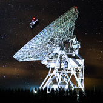

My name is Luke, currently living in Torun, Poland.
I have a lot of thoughts about gravity considering her way of acting and her origin. I have studied astrophysics at the Nicolaus Copernicus University in Torun. After several years of study I undertook work on the radio telescope at the Faculty of Astrophysics in Piwnice.
Currently working on solving mystery of gravity using Black Hole theory and gravitational-wave observations.